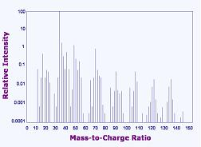

Secondary
Ion Mass Spectroscopy (SIMS)
Secondary
Ion Mass Spectroscopy (SIMS) is a failure analysis technique used in
the compositional analysis of a sample. SIMS operates on the
principle that bombardment of a material with a beam of ions with high
energy (1-30 keV) results in the ejection or sputtering of atoms from the
material. A small percentage of these ejected atoms leave as either
positively or negatively charged ions, which are referred to as 'secondary
ions.'
The collection of these sputtered secondary ions and their
analysis by mass-to-charge spectrometry gives information on the
composition of the sample, with the elements present identified through
their atomic mass values. Counting the number of secondary ions
collected can also give quantitative data on the sample's composition.
Thus, SIMS works by analyzing material removed from the sample by
sputtering, and is therefore a locally destructive technique.
The yield of
secondary ion sputtering, which affects SIMS sensitivity, depends on the
specimen's material, the specimen's crystallographic orientation,
and the nature, energy, and incidence angle of the primary beam of ions.
The
proper choice of primary ion beam is therefore important in enhancing the
sensitivity of SIMS. Oxygen atoms are usually used for sputtering
electropositive elements or those with low ionization potentials such as
Na, B, and Al. Cesium atoms, on the other hand, are better at
sputtering negative ions from electronegative elements such as C, O, and
As. The detection limit of SIMS is severely reduced with improper
selection of the ion beam. Liquid metal ion sources are used for
high-resolution work, since these can provide smaller beam diameters.
Since
the sputtered ions escape from shallow depths, the sputtering of the
sample has to be prolonged in order to extend the analytical zone of the
sample into deeper regions of the bulk material. Monitoring secondary ion emission in
relation to sputtering time therefore allows depth profiling of the
sample's composition. Layers of up to 10,000 angstroms thick can be
depth-profiled using SIMS. Using SIMS as a depth-profiling tool is
the dynamic mode of SIMS operation.

Figure 1.
Example of a SIMS Spectrum
SIMS
offers several advantages over other composition analysis techniques,
namely: 1) the ability to identify all elements, including H and He;
2) the ability to identify elements present in very low
concentration levels, such as dopants in semiconductors.
Of course, SIMS also has its own drawbacks as an analysis technique. Its
range of beam diameter (1-200 microns) is limited, with the sensitivity of
the technique suffering as the beam diameter is reduced, since less ions
for analysis are sputtered from the material. It also suffers
from secondary mass interference problems and, as mentioned earlier, is a
locally destructive technique.
See Also:
Failure
Analysis; All
FA Techniques; LIMS;
EDX/WDX Analysis;
Auger Analysis;
ESCA or XPS; FTIR Spectroscopy;
Chromatography;
FA Lab
Equipment; Basic FA
Flows;
Package Failures; Die
Failures
HOME
Copyright
© 2001-2005
www.EESemi.com.
All Rights Reserved.